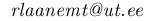
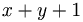

Test document
Introduction
This document describes jWiki Wiki markup parser. The parser
uses deterministic finite state automata for tokenizing the markup
and nondeterministic backtracking recursive top-down recursive parser
to produce abstract syntax tree. The syntax tree is then transformed
into xml and empty text nodes are removed.  Hehe, tex code:  .
Processing Chain
The processing chain of wiki text follows:
- Rewrite every line end to single n character.
- Add some extra spaces at the end of file.
- Tokenize text using the jwiki tokenizer.
- Parse text using the jwiki parser.
- Traverse abstract syntax tree and remove empty and meaningless
nodes.
- Transform tex code nodes into images.
- Transform abstract syntax tree into xml dom.
- Produce xml code from xml dom tree.
- (Optional) use xsl to produce (x)html from xml code.
- haha